1. ツリーの切り方
ツァイガルニク効果（続きが気になる心理）未完了ツリー
1本目を閉じてしまうと、次を開く理由が消えます。
続きが見えない位置で切るのが、このグループです。
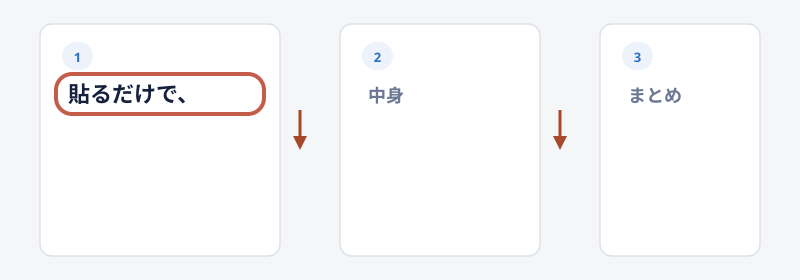
文の途中で切る
1本目を読点で止めて、続きはリプに置きます。
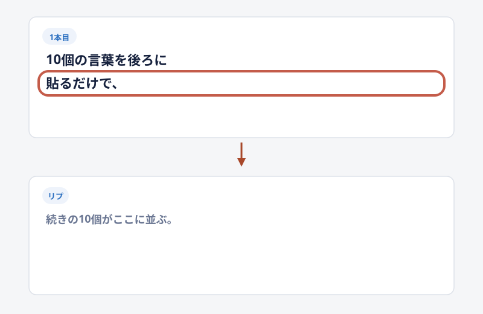
答えが見えないと、次を開きます。
得だけ先に出して矢印
得だけを先に出して、中身は2本目です。
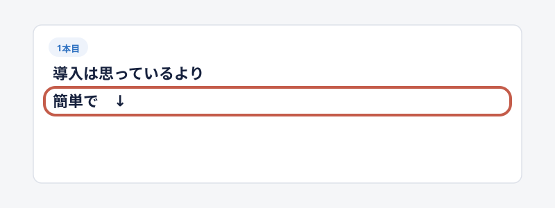
「↓」が、続きの印です。
対比の片側だけ出す
片側だけを1本目に置き、反対側はリプに隠します。
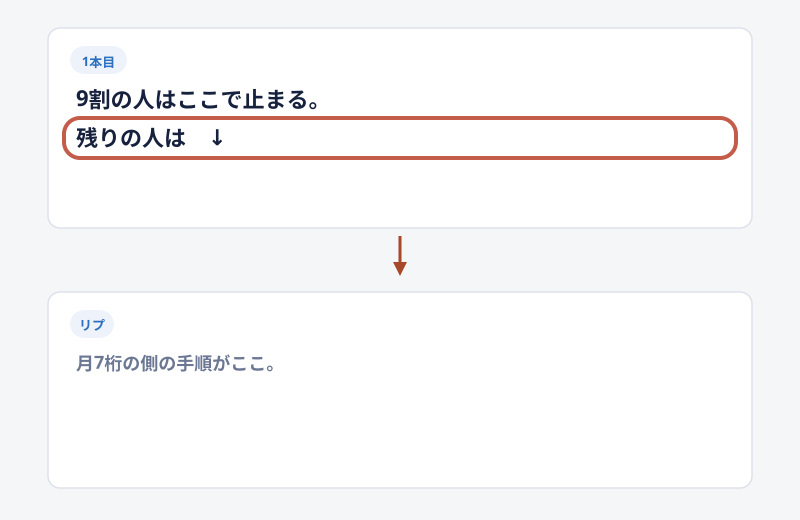
空いている側を見たくなります。
見出しだけ出す
箇条書きの題だけを1本目に置き、中身は後ろです。
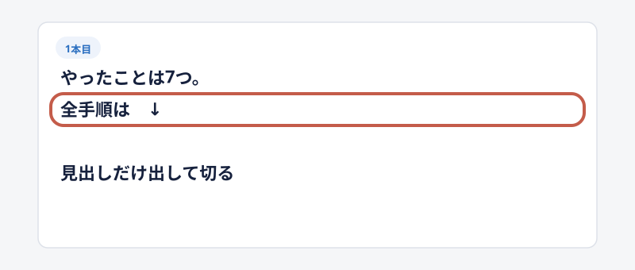
何個あるかが先に分かります。
応用を予告して切る
今の話の延長が後ろにあると見せて切る形です。
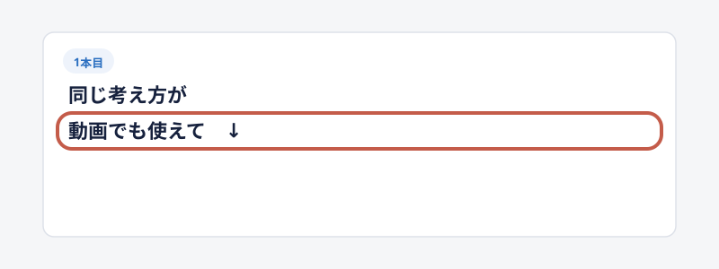
同じ型の使い回しに見えます。
消える予告で切る
期限で保存を急がせる形です。
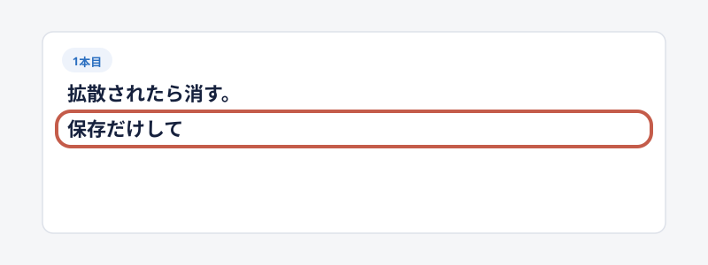
事実と違う期限は、景品表示法の線に触れます。
連番で続きを宣言する
1/12のように、何本あるかを先に出します。
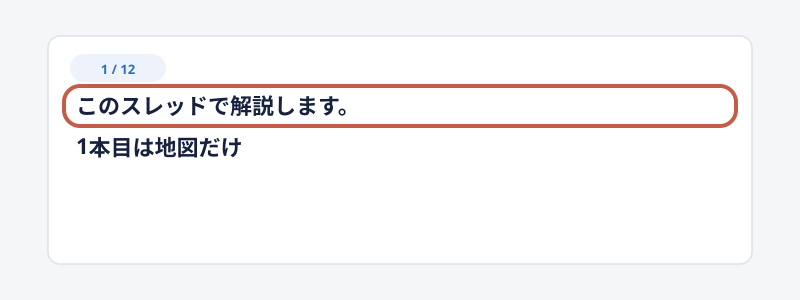
最後まで辿る理由が残ります。
2. 1投稿の中の並べ方
1枚の中でも、見る順を作れます。
番号と対比と実物が、よく残る並べ方です。
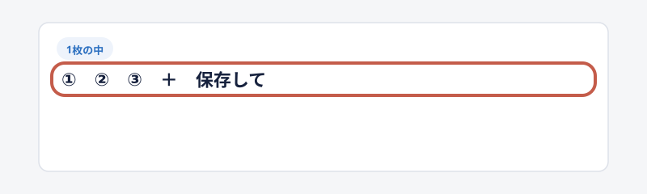
番号リストと保存して
①②③のあとで保存を頼む形です。
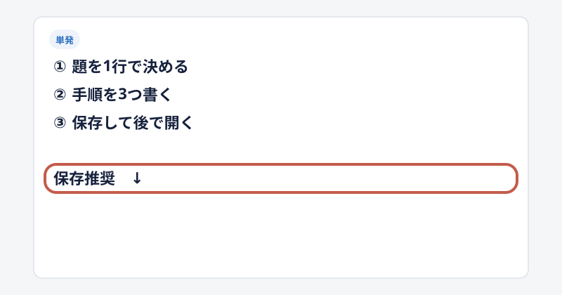
後で開く理由が残るので、保存がいいねを超えることがあります。
使えると使えないの2列
判断を代行するので、保存されます。
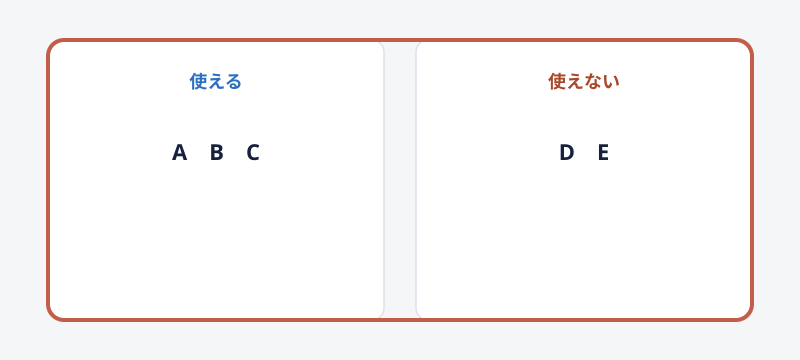
「結局どれ？」に一発で答えます。
矢印の流れ図
素材から数字までを1行でつなぎます。
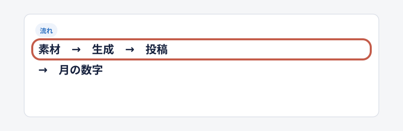
再現できそうに見えます。
伏せ字
公式や数字のあとで穴を開けます。
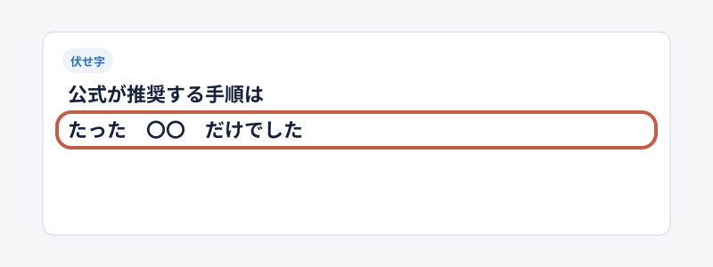
穴だけだと開かれません。
属性ゲート
自分のことだと感じた人だけが残ります。
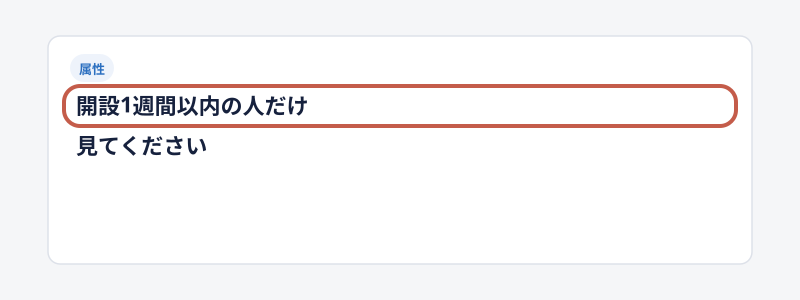
「開設1週間以内の人だけ見て」がこの形です。
会話のカギ括弧
説明より、他人の話として読まれます。
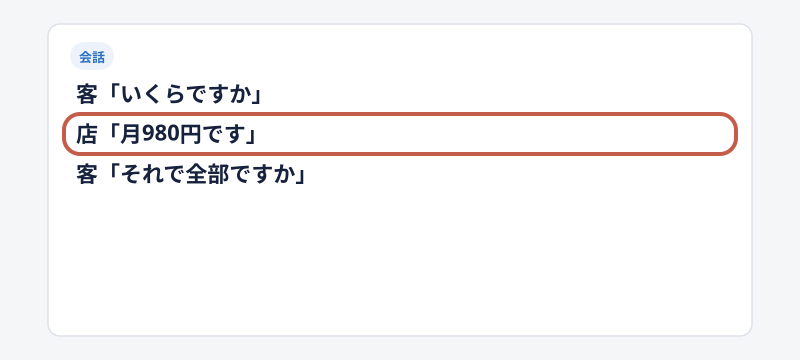
往復が短いほど、目が追います。
得のあと欠点
欠点があるほうが、売り込みに見えにくくなります。
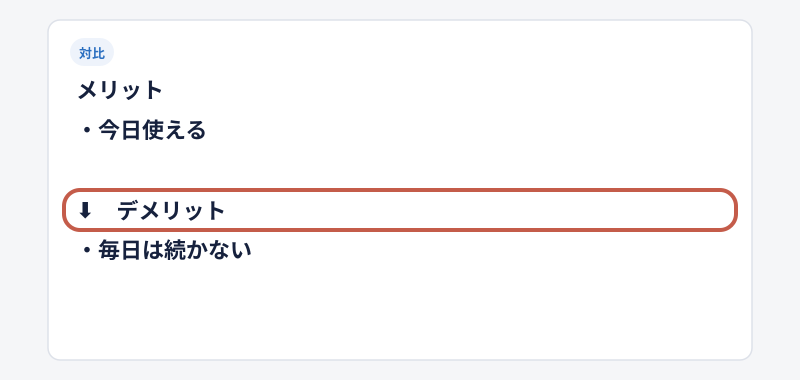
メリットのあとにデメリットを置きます。
順位や段
棚として残るので、保存向きです。
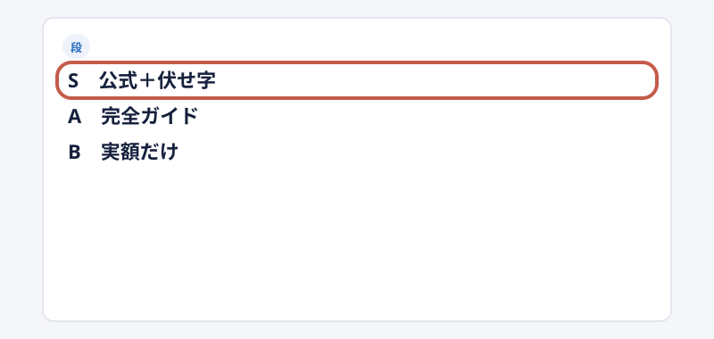
料金はすぐ古くなります。
本文に実物を置く
プロンプトや手順を、その投稿の中に書きます。
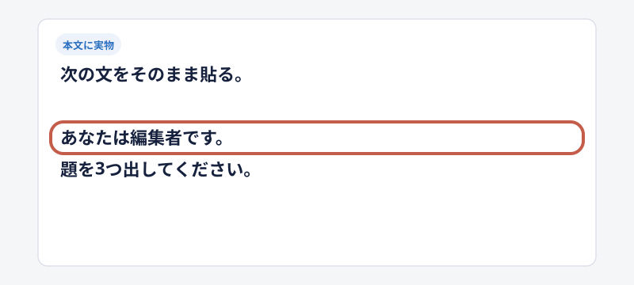
DMで配る形より、保存理由が残ります。
3. 反応の取り方
小さな動作を先に頼むと、拡散が付きます。
答えるコストが低い形が、何度も出ます。
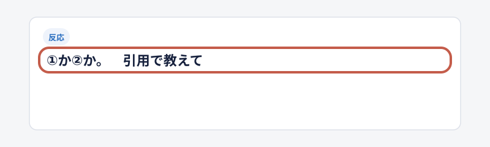
二択と番号投票
①か②かを聞きます。
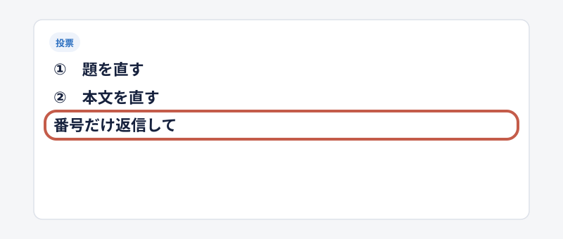
答えるコストが低いので、リプが付きます。
引用で答えを聞く
引用がタイムラインに増えるので、フォロワー以外に届きます。
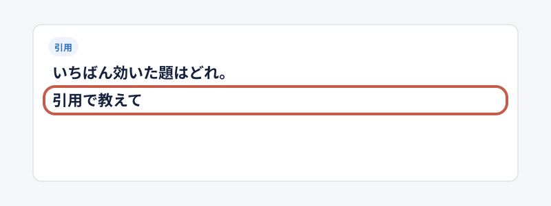
「引用で教えて」がこの形です。
当てはまる人はリポスト
小さな同意を先に取ります。
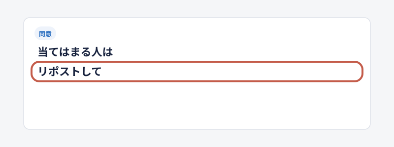
販売の案内より前に置く形です。
リプ欄に続き
よく見る釣りです。
中身が本体に無いと、スパム判定の元になります。
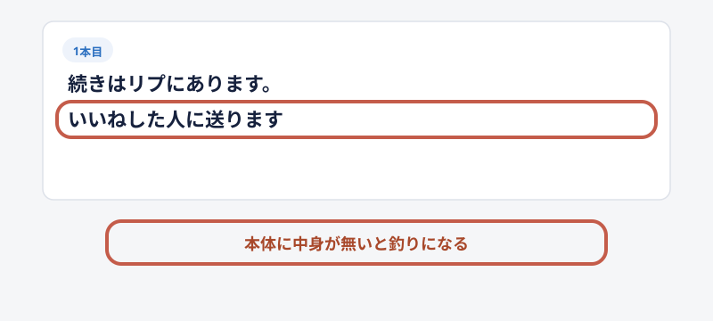
4. 画像と動画の置き方
本文を長くするより、画面を先に置くほうが目に入ります。
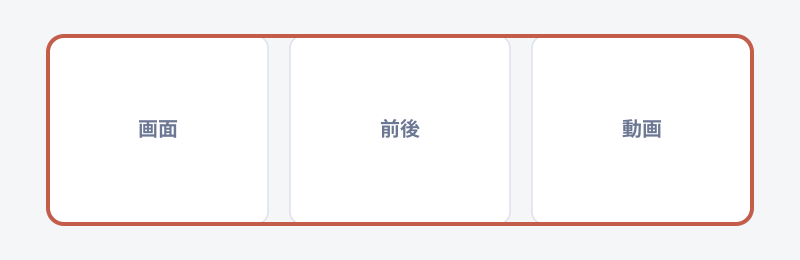
成果スクショと一言
売上や通知の画面に、短い文だけ添えます。
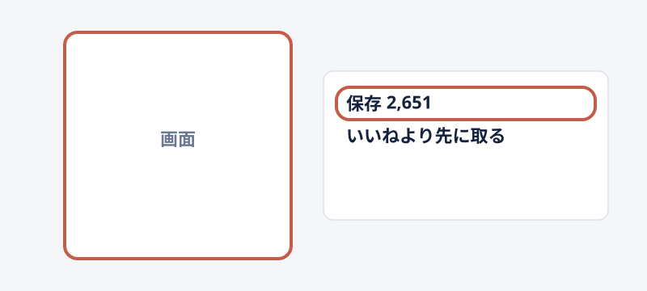
ビフォーアフター2枚
変化が一目で分かります。
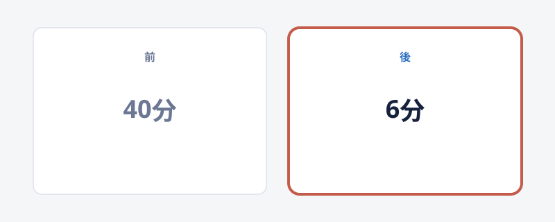
作業時間や画面の前後です。
公式の引用と一言
元投稿を借りて、自分の解釈を1行乗せます。
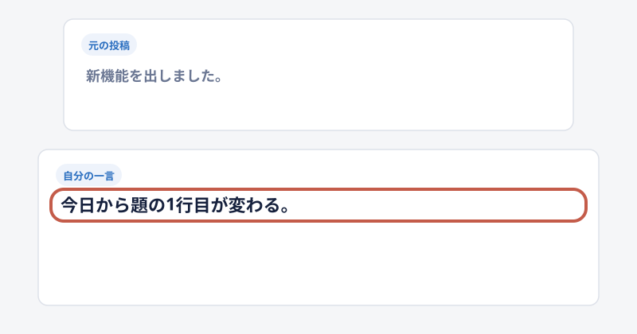
翻訳だけだと保存されません。
短い文とデモ動画
フックは本文、証拠は映像です。
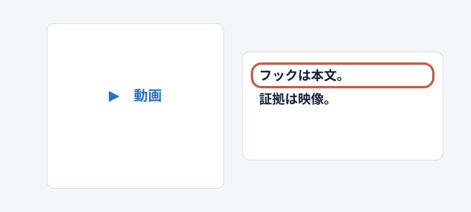
滞在が伸びます。
角括弧のラベル
【保存推奨】はタイムラインでよく見ます。
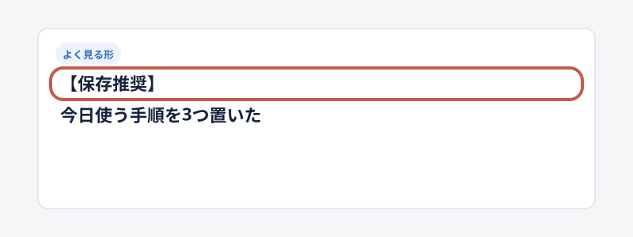
記事タイトルでは使えることがあります。
本文の見出しでは使いません。